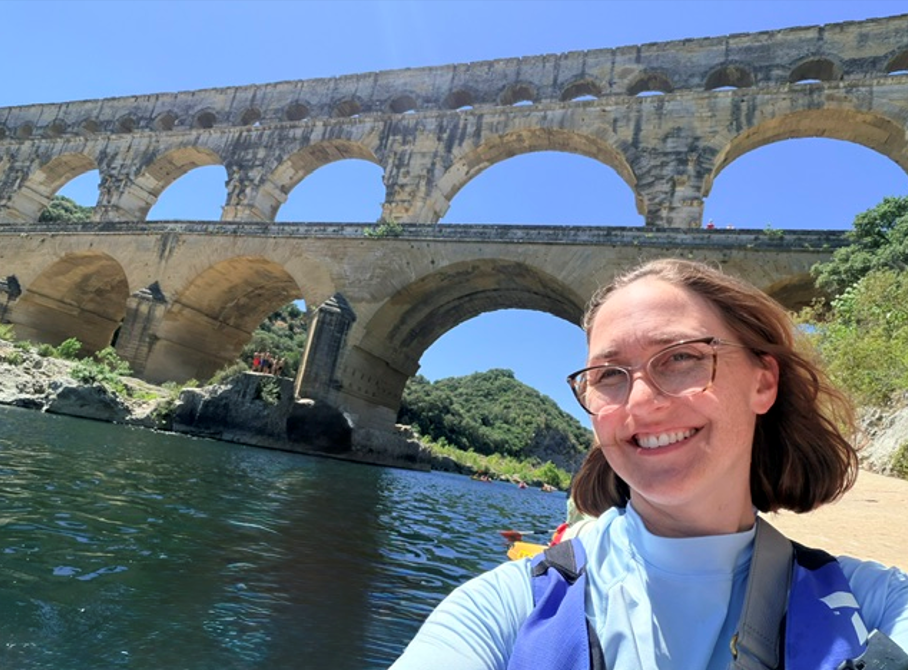
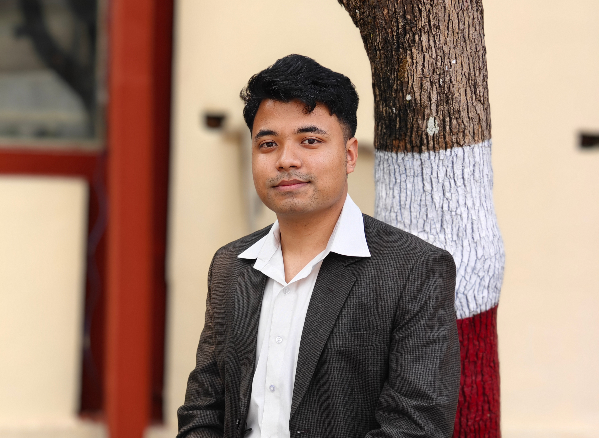
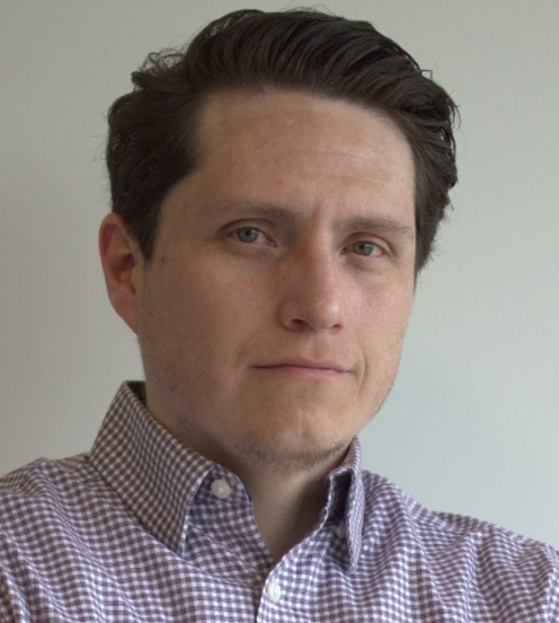
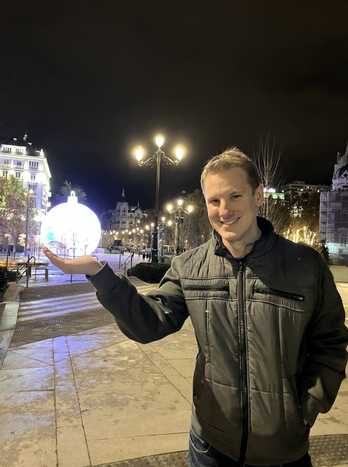

Gabriel Louw
“Climate Change Impacts on Groundwater Levels in Napier, New Zealand.”
Undergraduate Researcher, Schreyer Honors Thesis (October 2024 - May 2025).

B. Eng., Civil Engineering, IOE, Tribhuvan University, Nepal
M.S., Geotechnical Engineering, Tokyo Institute of Technology, Japan
My name is Aavash Ghimire. I joined Yost Research Group in Fall 2023. My research is currently focused on the linkage between hydroclimatic changes and geotechnical earthquake hazards, specifically liquefaction. I love soccer, hiking, exploring movies, and listening to podcasts.

B.S. National Taiwan University of Science and Technology (NTUST)
M.S., National Taiwan University (NTU)
I am Irene Peng from Taiwan. I hold a Bachelor's degree from National Taiwan University of Science and Technology (NTUST) and a Master's degree from National Taiwan University (NTU). My primary research focused on slope stability, exploring issues related to natural slopes and excavated slope failures. In Fall 2024, I joined Yost's team to further advance numerical simulation applications in geohazard issues, particularly in designing disaster warning systems under extreme climatic conditions.

B.S. Civil Engineering, US Military Academy, West Point, NY (2004)
M.Eng. Civil Engineering, Purdue University, West Lafayette, IN (2012)
Hello! I joined the Yost Research Group in Spring 2026 to study the ‘downstream’ effects of machine-learning generated synthetic hydrographs on transient seepage and slope stability. While my research primarily focuses on hydrologic and hydraulic impacts on levee safety, I’m particularly interested in coupling (and compounding) hydraulic and geotechnical uncertainty, and how addressing both can streamline the levee accreditation process. But enough of the hydrology puns… My hobbies default to my kids’ schedules at the moment, and my son has placed a moratorium on “machine-learning” and “hydrographs” at the dinner table, but I look forward to getting back to hiking, wine-tasting, trying new restaurants, and reading a book just for fun.

B.S. Civil Engineering, Tribhuvan University
Hi! I’m Sakar Hada from Nepal, with a bachelor's degree in civil engineering from Tribhuvan University. I’m passionate about multidisciplinary research in civil engineering, particularly at the intersection of geotechnical engineering and water resources. I’m also interested in exploring how technical solutions can be integrated with meaningful community engagement to develop practical and sustainable solutions.

B.E.Sc., Civil Engineering, The University of Western Ontario
M.E.Sc., Geotechnical Engineering, The University of Western Ontario
Graduate Certificate, Financial Technology, University of Toronto
Graduate Certificate, Financial Engineering, Pennsylvania State University
I am a Senior Geotechnical Engineer with experience in infrastructure and mine waste projects. My doctoral research focuses on applying statistical and data-driven methods to geotechnical engineering, particularly to characterize and quantify variability and uncertainty in soils and mine tailings. I am interested in developing statistical frameworks that account for the characteristics of the population being investigated, rather than relying solely on generalized empirical correlations. My doctoral research focuses on applying statistical and data-driven methods to geotechnical engineering, particularly in characterizing and quantifying variability and uncertainty in soils and mine tailings.

B.S., Biomedical Engineering, Miami University
M.S., Biomedical Engineering, Miami University
P.E., Civil Engineering
Dan Pedonesi is a practicing civil engineer with more than 20 years of multidisciplinary engineering experience, including extensive work in the design and certification of manufactured housing foundation systems. He joined the Yost Research Group in Fall 2026 as a Doctor of Engineering student. His research interests focus on the performance of manufactured housing foundations, including soil–structure interaction, settlement, pier and footing behavior, and anchorage, with an emphasis on connecting prescriptive design requirements with observed engineering behavior in the field. Outside of engineering, Anthony enjoys spending time with his family, traveling, and following college football.
“Climate Change Impacts on Groundwater Levels in Napier, New Zealand.”
Undergraduate Researcher, Schreyer Honors Thesis (October 2024 - May 2025).
“Documenting Levee Infrastructure and Related Flood Hazards in the Susquehanna River Basin.”
Undergraduate Researcher, WISER/MURE/FURP Program. (January 2024 - December 2024).
“Rising Water, Rising Concerns: Levee Residual Risk in the Susquehanna River Basin.”
Undergraduate Researcher, Penn State Climate Science REU Program. (May 2024 - August 2024).